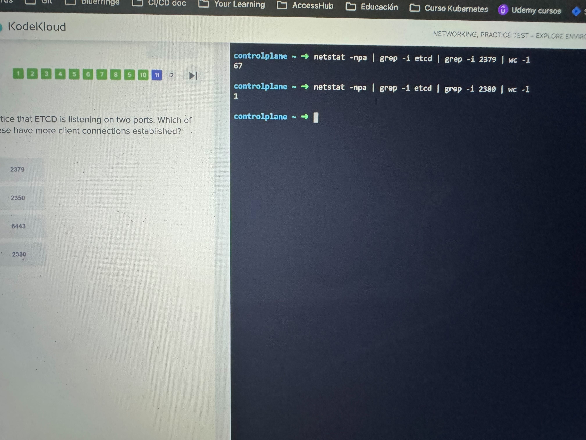
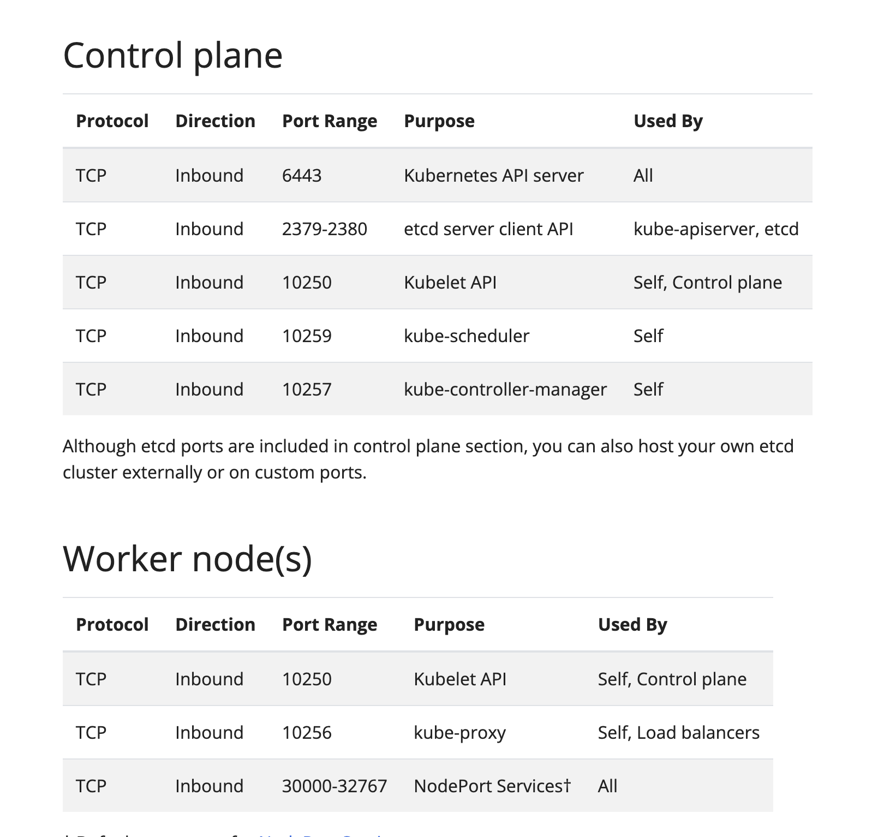
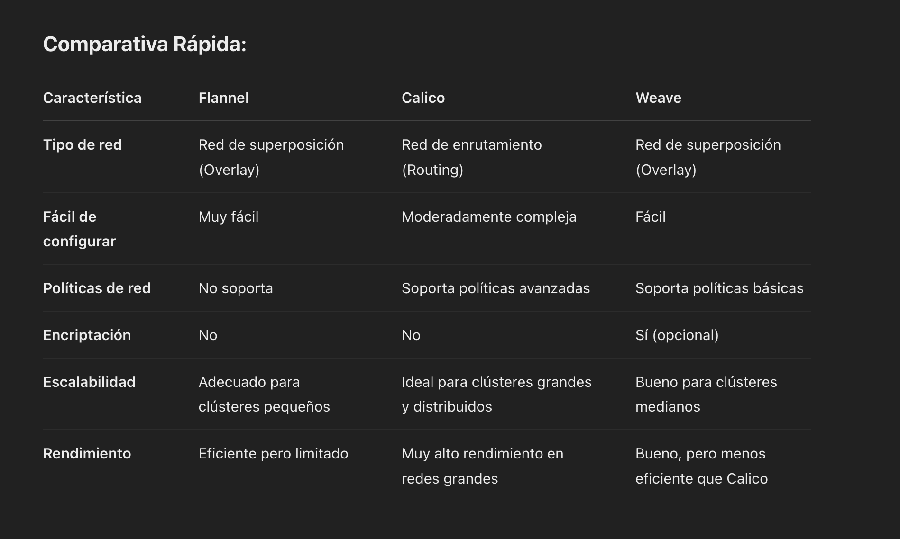

Networking
Este comando te ayuda a saber cual es el default gateway de un sistema:
Y para ver las interfaces de red:
O más especificamente:
controlplane ~ ➜ ip link show cni0
5: cni0: <BROADCAST,MULTICAST,UP,LOWER_UP> mtu 1360 qdisc noqueue state UP mode DEFAULT group default qlen 1000
link/ether 5e:8c:d4:cc:64:d9 brd ff:ff:ff:ff:ff:ff
Para ver la internaz del bridge:
Para en general ver las rutas:
Para saber cuantas conexiones hay establecidas para un proceso de red:

Puertos por defecto de K8s

CNI
Que maneja Kubeadm y qué no?
Lo que maneja kubeadm automáticamente: Cuando configuras un cluster con kubeadm, este se encarga de gran parte de la configuración de networking:
- Configuración básica del plano de control: Establece los componentes principales como API Server, etcd, etc.
- Instalación del CNI (Container Network Interface): kubeadm prepara el cluster para usar un plugin de red, pero necesitarás instalarlo explícitamente.
- Configuración de kube-proxy: Este componente implementa las reglas de red para los servicios (incluyendo ClusterIP).
- Configuración del DNS interno: Configura CoreDNS para la resolución de nombres dentro del cluster.
Lo que necesitas configurar manualmente:
-
Seleccionar e instalar un plugin CNI: Después de inicializar el cluster con kubeadm, debes instalar un plugin de red como Calico, Flannel, Weave, etc. Esto es lo que realmente implementa la comunicación pod-a-pod entre nodos.
-
Configuración de servicios: Los servicios como ClusterIP se crean mediante manifiestos de Kubernetes, no requieren configuración manual de IP a bajo nivel.
Entonces, ¿necesitas hacer ambos?
No necesitas configurar manualmente las direcciones IP con comandos como ip addr en un cluster de producción. Las herramientas como kubeadm y los plugins CNI manejan toda la configuración de red de bajo nivel.
Lo que sí necesitas hacer es:
- Asegurarte de que tus nodos tengan conectividad de red entre sí
- Inicializar el cluster con kubeadm
- Instalar un plugin CNI
- Crear tus servicios (ClusterIP, etc.) mediante manifiestos de Kubernetes
Los comandos como ip addr son útiles para entender y depurar cómo funciona el networking internamente, pero no son parte del flujo normal de configuración de un cluster Kubernetes.
IPs por defecto
Las IPs privadas son 10.x.x.x, 172.x.x.x y 192.168.x.x
Los CNI comunes usan los siguientes rangos de IP para los pods:
Calico: Si no se configura un rango específico, Calico usa por defecto el rango 192.168.0.0/16 Flannel: Suele usar 10.244.0.0/16 por defecto Weave: Generalmente usa 10.32.0.0/12 por defecto
Comparativa
